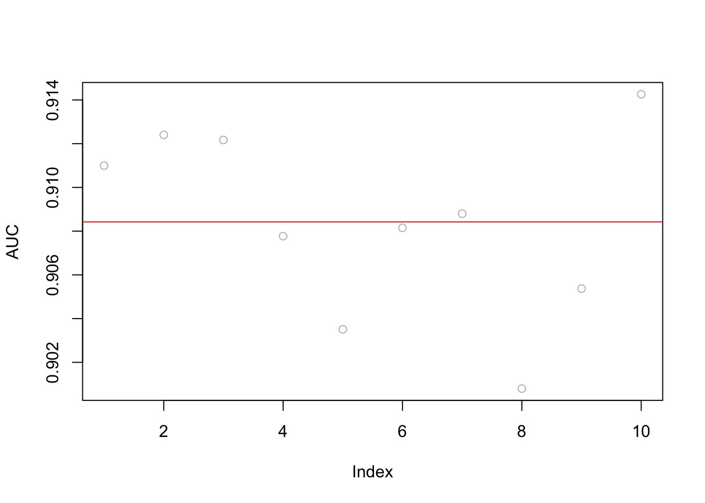
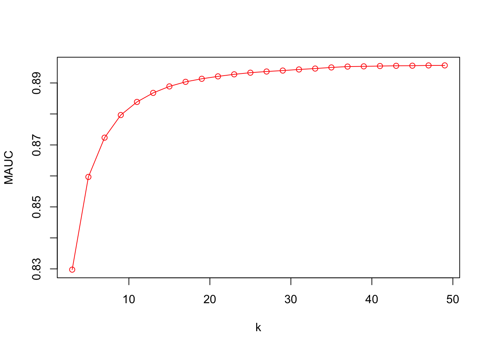
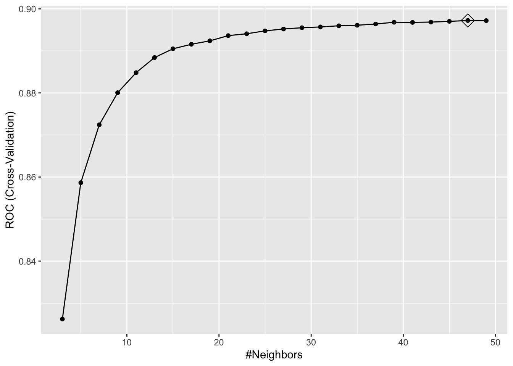

Chapter 11 Classification Example
We can conclude this section by using a real dataset for an applied classification example. The information on the dataset we will be using is given at the Machine Learning Repository at UCI (Kohavi and Becker 1996):
Extraction from 1994 US. Census database. A set of reasonably clean records was extracted using the following conditions: ((
AAGE>16) && (AGI>100) && (AFNLWGT>1) && (HRSWK>0)).
The prediction task is to determine whether a person makes over $50K a year. This question would be similar to the question of whether the person makes less than 50K. However, we need to be careful in defining which class will be positive or negative. Suppose we have \(Y\), 0 and 1, and we define 1 as a positive class:
\[ \begin{array}{ccc}{\text { Predicted vs. Reality}} & {{Y}=1+} & {{Y}=0-} \\ {\hat{Y}=1+} & {\text { TP }_{}} & {\text { FP }_{}} \\ {\hat{Y}=0-} & {\text { FN }_{}} & {\text { TN }_{}}\end{array} \] Now suppose we define 1 as a negative class:
\[ \begin{array}{ccc}{\text { Predicted vs. Reality}} & {{Y}=0+} & {{Y}=1-} \\ {\hat{Y}=0+} & {\text { TP }_{}} & {\text { FP }_{}} \\ {\hat{Y}=1-} & {\text { FN }_{}} & {\text { TN }_{}}\end{array} \] Of course this is just a notational difference and nothing changes in calculations. But some performance measures, especially, sensitivity (TPR) and fall-out (FPR) will be different. Here, we will use an example to illustrate this by intentionally picking 1 as a positive class while we try to evaluate the performance of our models by 1s.
We are going to use the original train set again to avoid some data cleaning jobs that we mentioned in Chapter 5.
# Download adult income data
# setwd("~/Dropbox/Documents/Courses/ML/Lectures_R")
# url.train <- "http://archive.ics.uci.edu/ml/machine-learning-databases/adult/adult.data"
# url.names <- "http://archive.ics.uci.edu/ml/machine-learning-databases/adult/adult.names"
# download.file(url.train, destfile = "adult_train.csv")
# download.file(url.names, destfile = "adult_names.txt")
# Read the training set into memory
train <- read.csv("adult_train.csv", header = FALSE)
varNames <- c("Age",
"WorkClass",
"fnlwgt",
"Education",
"EducationNum",
"MaritalStatus",
"Occupation",
"Relationship",
"Race",
"Sex",
"CapitalGain",
"CapitalLoss",
"HoursPerWeek",
"NativeCountry",
"IncomeLevel")
names(train) <- varNames
data <- trainIn each machine learning application, the data preparation stage (i.e. cleaning the data, organizing the columns and rows, checking out the columns’ names, checking the types of each feature, identifying and handling the missing observations, etc) is a very important step and should be dealt with a good care. We will see it later in our Data Exploration chapter.
First, let’s see if the data balanced or not:
tbl <- table(data$IncomeLevel)
tbl##
## <=50K >50K
## 24720 7841tbl[2]/tbl[1]## >50K
## 0.3171926There are multiple variables that are chr in the data.
str(data)## 'data.frame': 32561 obs. of 15 variables:
## $ Age : int 39 50 38 53 28 37 49 52 31 42 ...
## $ WorkClass : chr " State-gov" " Self-emp-not-inc" " Private" " Private" ...
## $ fnlwgt : int 77516 83311 215646 234721 338409 284582 160187 209642 45781 159449 ...
## $ Education : chr " Bachelors" " Bachelors" " HS-grad" " 11th" ...
## $ EducationNum : int 13 13 9 7 13 14 5 9 14 13 ...
## $ MaritalStatus: chr " Never-married" " Married-civ-spouse" " Divorced" " Married-civ-spouse" ...
## $ Occupation : chr " Adm-clerical" " Exec-managerial" " Handlers-cleaners" " Handlers-cleaners" ...
## $ Relationship : chr " Not-in-family" " Husband" " Not-in-family" " Husband" ...
## $ Race : chr " White" " White" " White" " Black" ...
## $ Sex : chr " Male" " Male" " Male" " Male" ...
## $ CapitalGain : int 2174 0 0 0 0 0 0 0 14084 5178 ...
## $ CapitalLoss : int 0 0 0 0 0 0 0 0 0 0 ...
## $ HoursPerWeek : int 40 13 40 40 40 40 16 45 50 40 ...
## $ NativeCountry: chr " United-States" " United-States" " United-States" " United-States" ...
## $ IncomeLevel : chr " <=50K" " <=50K" " <=50K" " <=50K" ...summary(data)## Age WorkClass fnlwgt Education
## Min. :17.00 Length:32561 Min. : 12285 Length:32561
## 1st Qu.:28.00 Class :character 1st Qu.: 117827 Class :character
## Median :37.00 Mode :character Median : 178356 Mode :character
## Mean :38.58 Mean : 189778
## 3rd Qu.:48.00 3rd Qu.: 237051
## Max. :90.00 Max. :1484705
## EducationNum MaritalStatus Occupation Relationship
## Min. : 1.00 Length:32561 Length:32561 Length:32561
## 1st Qu.: 9.00 Class :character Class :character Class :character
## Median :10.00 Mode :character Mode :character Mode :character
## Mean :10.08
## 3rd Qu.:12.00
## Max. :16.00
## Race Sex CapitalGain CapitalLoss
## Length:32561 Length:32561 Min. : 0 Min. : 0.0
## Class :character Class :character 1st Qu.: 0 1st Qu.: 0.0
## Mode :character Mode :character Median : 0 Median : 0.0
## Mean : 1078 Mean : 87.3
## 3rd Qu.: 0 3rd Qu.: 0.0
## Max. :99999 Max. :4356.0
## HoursPerWeek NativeCountry IncomeLevel
## Min. : 1.00 Length:32561 Length:32561
## 1st Qu.:40.00 Class :character Class :character
## Median :40.00 Mode :character Mode :character
## Mean :40.44
## 3rd Qu.:45.00
## Max. :99.00table(data$WorkClass)##
## ? Federal-gov Local-gov Never-worked
## 1836 960 2093 7
## Private Self-emp-inc Self-emp-not-inc State-gov
## 22696 1116 2541 1298
## Without-pay
## 14table(data$NativeCountry)##
## ? Cambodia
## 583 19
## Canada China
## 121 75
## Columbia Cuba
## 59 95
## Dominican-Republic Ecuador
## 70 28
## El-Salvador England
## 106 90
## France Germany
## 29 137
## Greece Guatemala
## 29 64
## Haiti Holand-Netherlands
## 44 1
## Honduras Hong
## 13 20
## Hungary India
## 13 100
## Iran Ireland
## 43 24
## Italy Jamaica
## 73 81
## Japan Laos
## 62 18
## Mexico Nicaragua
## 643 34
## Outlying-US(Guam-USVI-etc) Peru
## 14 31
## Philippines Poland
## 198 60
## Portugal Puerto-Rico
## 37 114
## Scotland South
## 12 80
## Taiwan Thailand
## 51 18
## Trinadad&Tobago United-States
## 19 29170
## Vietnam Yugoslavia
## 67 16You can see that there is only one observation in Holand-Netherlands. This is a problem because it will be either in the training set or the test set. Therefore, when you estimate without taking care of it, it will give this error if it is not in the training set but in the test set:
Error in model.frame.default(Terms, newdata, na.action = na.action, xlev = object$xlevels) : factor NativeCountry has new levels Holand-Netherlands
We will see later how to take care of these issues in a loop with several error handling options, like “try-and-catch”. But now, let’s drop this observation:
ind <- which(data$NativeCountry==" Holand-Netherlands")
data <- data[-ind, ]Although some packages like lm() and glm() can use character variables, they should be taken care of properly before any type of data analysis. In this case, it happens to be that all character variables should be factor variables. Here is an example:
df <- data
#converting by a loop
for (i in 1:ncol(df)) {
if(is.character(df[,i])) df[,i] <- as.factor(df[,i])
}
df <- data
#Converting with `apply()` family
df[sapply(df, is.character)] <- lapply(df[sapply(df, is.character)],
as.factor)The job is to use LPM, Logistic and kNN models and see which one could be a better predictive model for the data. In LPM and Logistic, we do not yet have any parameter to tune for a better prediction. Although we could use a degree of polynomials for selected features, we will set aside that option for now. We will later see regularization methods for parametric models, which will make LPM and logistic models “trainable”. In kNN, \(k\) is the hyperparameter to train the model. For our examples we are going to use our own training algorithm for all models, instead of using caret.
There are several key points to keep in mind in this classification practice:
- What performance metric(s) are we going to use for comparing the alternative models?
- How are we going to transform the predicted probabilities to classes (0’s and 1’s) so that we can have the confusion matrix?
Let’s start with LPM first.
11.1 LPM
#Check the data for NA's and remove them
anyNA(data)## [1] FALSE#data <- data[complete.cases(data), ] #otherwise, we could've used this
#We need to have Y numeric with 0 and 1.
#Our LPM calculates Pr(Y=1)
data$Y <- ifelse(data$IncomeLevel==" <=50K", 0, 1)
#Remove `IncomeLevel`
data <- data[, -15]Now we are ready. We will use ROC and AUC for comparing the models.
library(ROCR)
AUC <- c()
t = 100 # number of times we loop
for (i in 1:t) {
set.seed(i)
shuffle <- sample(nrow(data), nrow(data), replace = FALSE)
k <- 5
testind <- shuffle[1:(nrow(data)/k)]
trainind <- shuffle[-testind]
trdf<- data[trainind, ] #80% of the data
tsdf <- data[testind, ] #20% of data set a side
#LPM
model1 <- glm(Y ~ ., data = trdf, family = "gaussian")
phat <- predict(model1, tsdf)
phat[phat < 0] <- 0
phat[phat > 1] <- 1
# ROC & AUC (from ROCR)
phat_df <- data.frame(phat, "Y" = tsdf$Y)
pred_rocr <- prediction(phat_df[,1], phat_df[,2])
auc_ROCR <- performance(pred_rocr, measure = "auc")
AUC[i] <- auc_ROCR@y.values[[1]]
}
plot(AUC, col = "grey")
abline(a=mean(AUC), b=0, col = "red")
mean(AUC)## [1] 0.8936181sqrt(var(AUC))## [1] 0.003810335Let’s see the ROC curve from the last run.
# ROC from the last run by `ROCR`
perf <- performance(pred_rocr,"tpr","fpr")
plot(perf, colorize=TRUE)
abline(a = 0, b = 1)
# And our "own" ROC (we will use ROCR in this book, though)
phator <- phat[order(phat)]
phator[phator < 0] <- 0
phator[phator > 1] <- 1
phator <- unique(phator)
TPR <- c()
FPR <- c()
for (i in 1:length(phator)) {
yHat <- phat > phator[i]
conf_table <- table(yHat, tsdf$Y)
ct <- as.matrix(conf_table)
if(sum(dim(ct))>3){ #here we ignore the min and max thresholds
TPR[i] <- ct[2,2]/(ct[2,2]+ct[1,2])
FPR[i] <- ct[2,1]/(ct[1,1]+ct[2,1])
}
}
# Flat and vertical sections are omitted
plot(FPR, TPR, col= "blue", type = "l", main = "ROC")
abline(a = 0, b = 1, col="red")
What’s the confusion table at the “best” discriminating threshold? The answer is the one where the difference between TPR and FPR is maximized: Youden’s J Statistics. Note that this answers would be different if we have different weights in TPR and FPR. We may also have different targets, maximum FPR, for example.
# Youden's J Statistics
J <- TPR - FPR
# The best discriminating threshold
opt_th <- phator[which.max(J)]
opt_th## [1] 0.318723#TPR and FPR at this threshold
TPR[which.max(J)]## [1] 0.8494898FPR[which.max(J)]## [1] 0.2024676J[which.max(J)]## [1] 0.6470222And the confusion table (from the last run):
yHat <- phat > opt_th
conf_table <- table(yHat, tsdf$Y)
# Function to rotate the table (we did before)
rot <- function(x){
t <- apply(x, 2, rev)
tt <- apply(t, 1, rev)
return(t(tt))
}
# Better looking table
ct <- rot(conf_table)
rownames(ct) <- c("Yhat = 1", "Yhat = 0")
colnames(ct) <- c("Y = 1", "Y = 0")
ct##
## yHat Y = 1 Y = 0
## Yhat = 1 1332 1001
## Yhat = 0 236 3943Note that the optimal threshold is almost the ratio of cases in the data around 31%. We will come back to this issue later.
11.2 Logistic Regression
library(ROCR)
AUC <- c()
t = 10 # number of times we loop
for (i in 1:t) {
set.seed(i)
shuffle <- sample(nrow(data), nrow(data), replace = FALSE)
k <- 5
testind <- shuffle[1:(nrow(data)/k)]
trainind <- shuffle[-testind]
trdf<- data[trainind, ] #80% of the data
tsdf <- data[testind, ] #20% of data set a side
#Logistic
model2 <- glm(Y ~ ., data = trdf, family = "binomial")
#Note "response". It predicts phat. Another option "class"
#which predicts yhat by using 0.5
phat <- predict(model2, tsdf, type = "response")
phat[phat < 0] <- 0
phat[phat > 1] <- 1
# ROC & AUC (from ROCR)
phat_df <- data.frame(phat, "Y" = tsdf$Y)
pred_rocr <- prediction(phat_df[,1], phat_df[,2])
auc_ROCR <- performance(pred_rocr, measure = "auc")
AUC[i] <- auc_ROCR@y.values[[1]]
}
plot(AUC, col = "grey")
abline(a=mean(AUC), b=0, col = "red")
mean(AUC)## [1] 0.9084224sqrt(var(AUC))## [1] 0.004253052Both LPM and Logistic methods are linear classifiers. We can add polynomials and interactions manually to capture possible non-linearities in the data but that would be an impossible job as the features grow exponentially. This brings us to a non-parametric classifier, kNN.
11.3 kNN
We can use our own algorithm with kNN, then compare it with caret. We will train kNN with the choice of \(k\), as before, and also we will use AUC as our performance criteria in choosing \(k\).
11.3.1 kNN 10-fold CV
There are several packages in R for kNN applications: knn() from the class package and knn3() in the caret package. We will use knn3() in the caret package. The main reason is that knn() does not accept categorical predictors and has to be dummy coded manually, whereas knn3() can handle the factor variables itself. This has been discussed by here by David Dalpiaz (2017).
Since kNN use distances, we should scale the numerical variables first to make their magnitudes on the same scale.
rm(list = ls())
train <- read.csv("adult_train.csv", header = FALSE)
varNames <- c("Age",
"WorkClass",
"fnlwgt",
"Education",
"EducationNum",
"MaritalStatus",
"Occupation",
"Relationship",
"Race",
"Sex",
"CapitalGain",
"CapitalLoss",
"HoursPerWeek",
"NativeCountry",
"IncomeLevel")
names(train) <- varNames
df <- train
# Dropping single observation
ind <- which(df$NativeCountry==" Holand-Netherlands")
df <- df[-ind, ]
#Scaling the numerical variables
for(i in 1:ncol(df))
if(is.integer(df[,i])) df[,i] <- scale(df[,i])
#Converting the character variables to factor
df[sapply(df, is.character)] <- lapply(df[sapply(df, is.character)],
as.factor)
str(df)## 'data.frame': 32560 obs. of 15 variables:
## $ Age : num [1:32560, 1] 0.0307 0.8371 -0.0427 1.057 -0.7758 ...
## ..- attr(*, "scaled:center")= num 38.6
## ..- attr(*, "scaled:scale")= num 13.6
## $ WorkClass : Factor w/ 9 levels " ?"," Federal-gov",..: 8 7 5 5 5 5 5 7 5 5 ...
## $ fnlwgt : num [1:32560, 1] -1.064 -1.009 0.245 0.426 1.408 ...
## ..- attr(*, "scaled:center")= num 189783
## ..- attr(*, "scaled:scale")= num 105548
## $ Education : Factor w/ 16 levels " 10th"," 11th",..: 10 10 12 2 10 13 7 12 13 10 ...
## $ EducationNum : num [1:32560, 1] 1.13 1.13 -0.42 -1.2 1.13 ...
## ..- attr(*, "scaled:center")= num 10.1
## ..- attr(*, "scaled:scale")= num 2.57
## $ MaritalStatus: Factor w/ 7 levels " Divorced"," Married-AF-spouse",..: 5 3 1 3 3 3 4 3 5 3 ...
## $ Occupation : Factor w/ 15 levels " ?"," Adm-clerical",..: 2 5 7 7 11 5 9 5 11 5 ...
## $ Relationship : Factor w/ 6 levels " Husband"," Not-in-family",..: 2 1 2 1 6 6 2 1 2 1 ...
## $ Race : Factor w/ 5 levels " Amer-Indian-Eskimo",..: 5 5 5 3 3 5 3 5 5 5 ...
## $ Sex : Factor w/ 2 levels " Female"," Male": 2 2 2 2 1 1 1 2 1 2 ...
## $ CapitalGain : num [1:32560, 1] 0.148 -0.146 -0.146 -0.146 -0.146 ...
## ..- attr(*, "scaled:center")= num 1078
## ..- attr(*, "scaled:scale")= num 7385
## $ CapitalLoss : num [1:32560, 1] -0.217 -0.217 -0.217 -0.217 -0.217 ...
## ..- attr(*, "scaled:center")= num 87.2
## ..- attr(*, "scaled:scale")= num 403
## $ HoursPerWeek : num [1:32560, 1] -0.0354 -2.2221 -0.0354 -0.0354 -0.0354 ...
## ..- attr(*, "scaled:center")= num 40.4
## ..- attr(*, "scaled:scale")= num 12.3
## $ NativeCountry: Factor w/ 41 levels " ?"," Cambodia",..: 39 39 39 39 6 39 23 39 39 39 ...
## $ IncomeLevel : Factor w/ 2 levels " <=50K"," >50K": 1 1 1 1 1 1 1 2 2 2 ...Now we are ready. Here is our kNN training:
library(caret)
library(ROCR)
set.seed(123) #for the same results, no need otherwise
sh <- sample(nrow(df), nrow(df), replace = FALSE)
h <- 10
ind_test <- sh[1:(nrow(df)/h)]
ind_train <- sh[-ind_test]
# Put 10% a side as a test set
trdf <- df[ind_train, ]
tsdf <- df[ind_test, ]
# h - fold CV
nval <- floor(nrow(trdf)/h)
k <- seq(from = 3, to = 50, by = 2)
AUC <- c()
MAUC2 <- c()
k_opt <- c()
for(i in 1:h){
ind_val <- c(((i-1)*nval+1):(i*nval))
ind_train <- c(1:nrow(trdf))[-ind_val]
df_train<- trdf[ind_train, ]
df_val <- trdf[ind_val, ]
for(s in 1:length(k)){
model <- knn3(IncomeLevel ~., data = df_train, k = k[s])
phat <- predict(model, df_val, type = "prob")
#AUC
pred_rocr <- prediction(phat[,2], df_val$IncomeLevel)
auc_ROCR <- performance(pred_rocr, measure = "auc")
AUC[s] <- auc_ROCR@y.values[[1]]
}
MAUC2[i] <- AUC[which.max(AUC)]
k_opt[i] <- k[which.max(AUC)]
}Note that kNN would best fit on data sets with true numeric variables. Now we can find the tuned kNN (i.e.the best “k”) and apply the trained kNN for prediction using the test data we split at the beginning
cbind(k_opt, MAUC2)## k_opt MAUC2
## [1,] 49 0.9020390
## [2,] 37 0.9015282
## [3,] 27 0.8911303
## [4,] 45 0.8967005
## [5,] 47 0.9035859
## [6,] 21 0.9004941
## [7,] 33 0.8937860
## [8,] 37 0.8985006
## [9,] 43 0.8918030
## [10,] 47 0.9016616mean(k_opt)## [1] 38.6mean(MAUC2)## [1] 0.8981229We can compare kNN with LPM (and Logistic) by AUC (not the one given above!) but “k” is not stable. Although, we can go with the mean of “k” or the mode of “k”, we can address this problem by changing the order of loops and using bootstrapping in our training instead of 10-fold CV, which would also increase the number or loops hence the running time.
Before jumping into this possible solution, we need to think about what we have done so far. We trained our kNN. That is, we got the value of our hyperparameter. We should use our tuned kNN to test it on the test data that we put aside at the beginning. The proper way to that, however, is to have several loops, instead of one like what we did here, and calculate the test AUC for comparison, which is similar to what we did in LPM and Logistic before. We will not do it here as the running time would be very long, which, by the way, shows the importance of having fast “machines” as well as efficient algorithms. We will return to this issue in Chapter 21.1.
A more stable, but much longer, suggestion for tuning our kNN application is using a bootstrapping method. It runs multiple loops and takes the average of AUC with the same “k”. The example below is restricted to 20 runs for each “k”. Note that bootstrapping (See Chapter 37.5) is a process of resampling with replacement (all values in the sample have an equal probability of being selected, including multiple times, so a value could have duplicates).
#### Test/Train split - as before!########
# however, this is done only once here.
# Should be done in a loop multiple times
set.seed(123)
sh <- sample(nrow(df), nrow(df), replace = FALSE)
h <- 10
ind_test <- sh[1:(nrow(df)/h)]
ind_train <- sh[-ind_test]
# Put 10% a side as a test set
trdf <- df[ind_train, ]
tsdf <- df[ind_test, ]
########## Bootstrapping ############
# Note that we use `by=2` to reduce the running time
# With a faster machine, that could be set to 1.
k <- seq(from = 3, to = 50, by = 2)
m <- 20 # number of bootstrap loops (could be higher to, like 50)
MAUC <- c()
k_opt <- c()
for(i in 1:length(k)){
AUC <- c()
for(l in 1:m){
#Here is the heart of bootstrapped tuning
set.seed(l)
bind <- sample(nrow(trdf), nrow(trdf), replace = TRUE)
uind <- unique(bind)
df_train <- df[uind, ]
df_val <- df[-uind, ]
model <- knn3(IncomeLevel ~., data = df_train, k = k[i])
phat <- predict(model, df_val, type = "prob")
#AUC
pred_rocr <- prediction(phat[,2], df_val$IncomeLevel)
auc_ROCR <- performance(pred_rocr, measure = "auc")
AUC[l] <- auc_ROCR@y.values[[1]]
}
MAUC[i] <- mean(AUC)
}OK … now finding the optimal “k”
plot(k, MAUC, col = "red", type = "o")
MAUC[which.max(MAUC)]## [1] 0.895667k[which.max(MAUC)]## [1] 49This algorithm can be more efficient with parallel processing using multicore loop applications, which we will see In Chapter 14 (14.4.2). The other way to reduce the running time is to make the increments in the grid (for “k”) larger, like 10, and then find the region where AUC is highest. Then, we can have a finer grid for that specific region to identify the best “k”.
Before concluding this chapter, note that knn3() handles factor variables itself. This is an internal process and a good one. Remember, knn() could not do that and requires all features to be numeric. How could we do that? One way to handle it is to convert all factor variables to dummy (binary numerical) codes as shown below. This is also called as “one-hot encoding” in practice. This type of knowledge, what type of data handling is required by a package and how we can achieve it, is very important in data analytics.
dftmp <- df[,-15]
ind <- which(sapply(dftmp, is.factor)==TRUE)
fctdf <- dftmp[,ind]
numdf <- dftmp[, -ind]
#dummy coding
fctdum <- model.matrix(~. - 1, data = fctdf)
#Binding
df_dum <- cbind(Y = df$IncomeLevel, numdf, fctdum)Now, it can also be used with knn() for the class package. Note that kNN gets unstable as the number of variables increases. We can see it by calculating test AUC multiple times by adding an outer loop to our algorithm.
11.3.2 kNN with caret
# kNN needs a proper levels with caret!
levels(df$IncomeLevel)[levels(df$IncomeLevel)==" <=50K"] <- "Less"
levels(df$IncomeLevel)[levels(df$IncomeLevel)==" >50K"] <- "More"
levels(df$IncomeLevel)## [1] "Less" "More"#### Test/Train split ########
set.seed(123)
sh <- sample(nrow(df), nrow(df), replace = FALSE)
h <- 10
ind_test <- sh[1:(nrow(df)/h)]
ind_train <- sh[-ind_test]
trdf <- df[ind_train, ]
tsdf <- df[ind_test, ]
########## CARET SET-UP ##################
# Here we use class probabilities, which is required for ROC training
#`twoClassSummary` will compute the sensitivity, specificity, AUC, ROC
cv <- trainControl(method = "cv", number = 10, p = 0.9, classProbs = TRUE,
summaryFunction = twoClassSummary)
#The main training process
set.seed(5) # for the same results, no need otherwise
model_knn3 <- train(IncomeLevel ~ ., method = "knn", data = trdf,
tuneGrid = data.frame(k=seq(3, 50, 2)),
trControl = cv,
metric = "ROC") #Here is the key difference.
#we are asking caret to use ROC
#as our main performance criteria
#Optimal k
ggplot(model_knn3, highlight = TRUE)
model_knn3## k-Nearest Neighbors
##
## 29304 samples
## 14 predictor
## 2 classes: 'Less', 'More'
##
## No pre-processing
## Resampling: Cross-Validated (10 fold)
## Summary of sample sizes: 26374, 26373, 26374, 26374, 26373, 26374, ...
## Resampling results across tuning parameters:
##
## k ROC Sens Spec
## 3 0.8262230 0.8941795 0.5961648
## 5 0.8586528 0.9031179 0.6005682
## 7 0.8724161 0.9090915 0.6086648
## 9 0.8800527 0.9111126 0.6088068
## 11 0.8848148 0.9129091 0.6079545
## 13 0.8884125 0.9150201 0.6035511
## 15 0.8904958 0.9174006 0.6041193
## 17 0.8915694 0.9167720 0.6063920
## 19 0.8923858 0.9171763 0.6036932
## 21 0.8936219 0.9179848 0.6035511
## 23 0.8940702 0.9159186 0.6042614
## 25 0.8947602 0.9174457 0.6039773
## 27 0.8952041 0.9176254 0.6026989
## 29 0.8955018 0.9179398 0.6019886
## 31 0.8956911 0.9180746 0.6017045
## 33 0.8959661 0.9187034 0.6029830
## 35 0.8960988 0.9179398 0.5998580
## 37 0.8963903 0.9182991 0.5994318
## 39 0.8968082 0.9191523 0.5977273
## 41 0.8967777 0.9192421 0.5977273
## 43 0.8968486 0.9204999 0.5977273
## 45 0.8970198 0.9202755 0.5944602
## 47 0.8972242 0.9205450 0.5944602
## 49 0.8971898 0.9208593 0.5923295
##
## ROC was used to select the optimal model using the largest value.
## The final value used for the model was k = 47.model_knn3$results## k ROC Sens Spec ROCSD SensSD SpecSD
## 1 3 0.8262230 0.8941795 0.5961648 0.004815409 0.008727063 0.012670476
## 2 5 0.8586528 0.9031179 0.6005682 0.005448823 0.007349595 0.011200694
## 3 7 0.8724161 0.9090915 0.6086648 0.005166892 0.006160801 0.015110770
## 4 9 0.8800527 0.9111126 0.6088068 0.004782100 0.006779982 0.015820347
## 5 11 0.8848148 0.9129091 0.6079545 0.005121326 0.006691569 0.009772617
## 6 13 0.8884125 0.9150201 0.6035511 0.004814653 0.007291597 0.006261826
## 7 15 0.8904958 0.9174006 0.6041193 0.004443550 0.006821105 0.011003812
## 8 17 0.8915694 0.9167720 0.6063920 0.004336396 0.006641748 0.009964578
## 9 19 0.8923858 0.9171763 0.6036932 0.004357410 0.007690924 0.009156761
## 10 21 0.8936219 0.9179848 0.6035511 0.004689076 0.007526214 0.009644457
## 11 23 0.8940702 0.9159186 0.6042614 0.004753603 0.007840512 0.008710062
## 12 25 0.8947602 0.9174457 0.6039773 0.004637773 0.007644920 0.009151863
## 13 27 0.8952041 0.9176254 0.6026989 0.004438855 0.007110203 0.009279578
## 14 29 0.8955018 0.9179398 0.6019886 0.004414619 0.006857247 0.007080142
## 15 31 0.8956911 0.9180746 0.6017045 0.004228545 0.007160469 0.006567629
## 16 33 0.8959661 0.9187034 0.6029830 0.004194696 0.007855452 0.007342833
## 17 35 0.8960988 0.9179398 0.5998580 0.004149906 0.007520967 0.008654547
## 18 37 0.8963903 0.9182991 0.5994318 0.004319967 0.007271261 0.007426320
## 19 39 0.8968082 0.9191523 0.5977273 0.004422126 0.007898694 0.007080142
## 20 41 0.8967777 0.9192421 0.5977273 0.004740533 0.007711601 0.007745494
## 21 43 0.8968486 0.9204999 0.5977273 0.004691945 0.007227390 0.007420280
## 22 45 0.8970198 0.9202755 0.5944602 0.004919464 0.007125413 0.008207829
## 23 47 0.8972242 0.9205450 0.5944602 0.004863486 0.007306936 0.008180470
## 24 49 0.8971898 0.9208593 0.5923295 0.004929357 0.007144172 0.007335196Confusion matrix:
# Performance metrics
confusionMatrix(predict(model_knn3, tsdf, type = "raw"),
tsdf$IncomeLevel)## Confusion Matrix and Statistics
##
## Reference
## Prediction Less More
## Less 2303 300
## More 179 474
##
## Accuracy : 0.8529
## 95% CI : (0.8403, 0.8649)
## No Information Rate : 0.7623
## P-Value [Acc > NIR] : < 2.2e-16
##
## Kappa : 0.571
##
## Mcnemar's Test P-Value : 4.183e-08
##
## Sensitivity : 0.9279
## Specificity : 0.6124
## Pos Pred Value : 0.8847
## Neg Pred Value : 0.7259
## Prevalence : 0.7623
## Detection Rate : 0.7073
## Detection Prevalence : 0.7994
## Balanced Accuracy : 0.7701
##
## 'Positive' Class : Less
## # If we don't specify "More" as our positive results, the first level
# "Less" will be used as the "positive" result.
confusionMatrix(predict(model_knn3, tsdf, type = "raw"),
tsdf$IncomeLevel, positive = "More")## Confusion Matrix and Statistics
##
## Reference
## Prediction Less More
## Less 2303 300
## More 179 474
##
## Accuracy : 0.8529
## 95% CI : (0.8403, 0.8649)
## No Information Rate : 0.7623
## P-Value [Acc > NIR] : < 2.2e-16
##
## Kappa : 0.571
##
## Mcnemar's Test P-Value : 4.183e-08
##
## Sensitivity : 0.6124
## Specificity : 0.9279
## Pos Pred Value : 0.7259
## Neg Pred Value : 0.8847
## Prevalence : 0.2377
## Detection Rate : 0.1456
## Detection Prevalence : 0.2006
## Balanced Accuracy : 0.7701
##
## 'Positive' Class : More
## This example was our first self-learning nonparametric application using kNN. We now know two things: (1) how good the prediction is with kNN; (2) how good it is relative to LPM and Logistic. These two questions must be answered every time to evaluate the prediction performance of a machine learning algorithm. But when we answer these questions in this practice, although we didn’t calculate the test AUC in our own kNN algorithm, we can accept that kNN performance is good with AUC that is close to 90%. However, it is not significantly better than LPM and Logistic, which we can think of as our base prediction methods.
We will leave it here with kNN, which was our first .